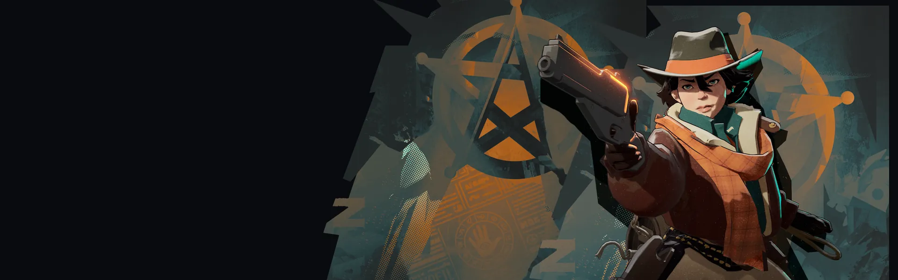

Barril de pólvora Powder Keg Lança um barril que explode após um tempo, causando dano espiritual, incendiando e jogando inimigos para o alto. Trampolim Bounce Pad Solta uma plataforma que lança heróis ao ar e causa dano espiritual a inimigos próximos quando ela pousa. Tiro Certeiro Crackshot Tiros na cabeça causam dano de arma extra e aplicam uma lentidão que se dissipa, só quando o efeito não está em recarga.
Laço Espiritual Spirit Lasso Lança um laço que causa dano espiritual, puxa o alvo até ela e o atordoa.Atiradora de ritmo firme, forte quando domina a distância.
História
Tem gente que passou a vida inteira sonhando em se mudar para Nova York. Holliday não é uma dessas pessoas. Contente por ser xerife em uma cidade pequena, Holliday desfrutou de uma carreira em que a única vez que ela teve que usar sua arma foi quando fazia tiros na feira do condado... então os assassinatos começaram.
Terrível e desumano; os corpos foram encontrados com as costelas abertas... as entranhas despedaçadas como se fossem pássaros. Holliday localizou o assassino, um músico folk viajante que a mídia apelidou de "O Trovador", mas quando ela o confrontou, ele explodiu em um assassinato de corvos e voou para longe.
Isso foi há 6 meses e, embora os assassinatos no centro de Illinois tenham parado, a investigação de Holliday não parou. Ela acredita que o Trovador está viajando para Nova York e, quando o encontrar, vai matar aquele filho da puta malvado.
História oficial do jogo, traduzida automaticamente para o português.
Números reais
Habilidades
Lança um barril que explode após um tempo, causando dano espiritual, incendiando e jogando inimigos para o alto.
Solta uma plataforma que lança heróis ao ar e causa dano espiritual a inimigos próximos quando ela pousa.
Tiros na cabeça causam dano de arma extra e aplicam uma lentidão que se dissipa, só quando o efeito não está em recarga.
Lança um laço que causa dano espiritual, puxa o alvo até ela e o atordoa.
Builds mais usadas
21.883 partidas registradas com esta build.
Reforço de tiro na cabeça (800) · Taxa Extra (800) · Saúde Extra (800) · Longo alcance (1.600) · Caçador de talentos (3.200) · Revista Estendida (800) · Triturador resistente a balas (1.600) · Surto de Poder (3.200) · Regeneração Extra (800) · Rito de Cura (800)
8.170 partidas registradas com esta build.
Taxa Extra (800) · Espírito Extra (800) · Espírito Melhorado (1.600) · Recarregando corrida (1.600) · Recarga rápida (3.200) · Vigor Extra (800) · Emblema do Encantador (1.600) · Healbane (1.600) · Colecionador de Troféus (1.600) · Atacante Rápido (1.600)
7.700 partidas registradas com esta build.
Reforço de tiro na cabeça (800) · Taxa Extra (800) · Espírito Extra (800) · Espírito Melhorado (1.600) · Recarga rápida (3.200) · Vigor Extra (800) · Recarregando corrida (1.600) · Emblema do Encantador (1.600) · Tiro Místico (1.600) · Rodadas de Abertura (1.600)
Confrontos reais
 Shiv — 53.6% de vitória
Shiv — 53.6% de vitória Pocket — 52.6% de vitória
Pocket — 52.6% de vitória Mirage — 52.6% de vitória
Mirage — 52.6% de vitória Solomon — 52.0% de vitória
Solomon — 52.0% de vitória Warden — 51.9% de vitória
Warden — 51.9% de vitória Sinclair — 51.8% de vitória
Sinclair — 51.8% de vitória
 Graves — 40.5% de vitória
Graves — 40.5% de vitória Rat King — 40.6% de vitória
Rat King — 40.6% de vitória Victor — 41.3% de vitória
Victor — 41.3% de vitória Paige — 41.6% de vitória
Paige — 41.6% de vitória Seven — 42.3% de vitória
Seven — 42.3% de vitória Kelvin — 42.5% de vitória
Kelvin — 42.5% de vitória
Ver a página de counters do Holliday
O que upar primeiro
Nível por nível, na ordem que os jogadores mais usam em partidas de verdade. A porcentagem mostra quantos escolheram aquela habilidade naquele nível.
Melhores duplas
Heróis que mais ganham jogando junto com ele, em partidas reais (pelo menos 1.500 partidas juntos).
- Rat King55,4%
- Graves55,0%
- Seven53,2%
- Paige52,9%
- Victor52,3%
 Deadman Danny41,4%
Deadman Danny41,4%- Sinclair42,0%
- Shiv42,2%
Rota (lane)
Na rota, cada lado joga em dupla. Estes números são de confrontos reais: a diferença de almas é medida com o jogo já começado, então almas no verde significa que ele costuma estar na frente.
- Graves — 38,3% de vitória −368 almas (167 partidas)
 Venator — 38,5% de vitória −1.195 almas (161 partidas)
Venator — 38,5% de vitória −1.195 almas (161 partidas)- Rat King — 41,8% de vitória −474 almas (1.097 partidas)
- Paige — 43,5% de vitória −65 almas (283 partidas)
 Lash — 44,9% de vitória +187 almas (709 partidas)
Lash — 44,9% de vitória +187 almas (709 partidas) Haze — 47,0% de vitória −248 almas (1.748 partidas)
Haze — 47,0% de vitória −248 almas (1.748 partidas) Bebop — 47,5% de vitória −261 almas (1.645 partidas)
Bebop — 47,5% de vitória −261 almas (1.645 partidas)- Solomon — 48,4% de vitória −388 almas (184 partidas)
 Mo & Krill — 56,1% de vitória −366 almas (196 partidas)
Mo & Krill — 56,1% de vitória −366 almas (196 partidas) Yamato — 52,0% de vitória +76 almas (152 partidas)
Yamato — 52,0% de vitória +76 almas (152 partidas) Vindicta — 51,7% de vitória −98 almas (429 partidas)
Vindicta — 51,7% de vitória −98 almas (429 partidas)
Histórico de win rate
14/09: 46.2% → 02/11: 47.8% → 21/12: 44.3% → 08/02: 45.8% → 29/03: 44.1% → 17/05: 46.7% → 05/07: 48.2% → 23/08: 47.1% → 11/10: 48.0%